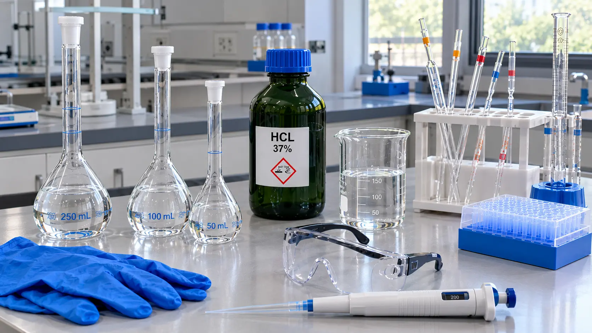

Química básica
Cómo preparar HCl 1 M a partir de HCl concentrado al 37 %
Para preparar HCl 1 M a partir de HCl al 37 % (d = 1,19 g/mL) se toman unos 8,3 mL de ácido concentrado por cada 100 mL de solución final, es decir, unos 83 mL por litro, siempre añadiendo el ácido sobre el agua.

Para preparar HCl 1 M a partir de ácido clorhídrico concentrado al 37 % hay que pasar el porcentaje en masa a molaridad (unos 12,1 mol/L) y luego diluir: por cada 100 mL de solución 1 M se miden unos 8,3 mL de ácido. El volumen exacto para los datos de tu frasco se obtiene con la calculadora de dilución desde reactivo comercial.
Cuánto HCl al 37 % se necesita para preparar HCl 1 M
El ácido clorhídrico de laboratorio no se vende con una molaridad conocida, sino como reactivo concentrado cuya riqueza oscila entre el 36 y el 38 % p/p. Ese ~37 % es el máximo práctico a temperatura ambiente: a concentraciones mayores, la presión de vapor del cloruro de hidrógeno es tan alta que el frasco pierde gas rápidamente. Con un ácido al 37 % y d = 1,19 g/mL, los volúmenes habituales son estos:
| Solución a preparar | HCl al 37 % a medir |
|---|---|
| 100 mL de HCl 1 M | ≈ 8,3 mL |
| 500 mL de HCl 1 M | ≈ 41,4 mL |
| 1 L de HCl 1 M | ≈ 82,8 mL |
| 1 L de HCl 0,1 M | ≈ 8,3 mL |
Como la riqueza real del lote puede ir del 36 al 38 % y la densidad de 1,18 a 1,19 g/mL, el volumen para 500 mL de HCl 1 M varía entre unos 40,3 y 42,9 mL. Por eso no tiene sentido medirlo «exactamente»: la concentración precisa se obtiene después, al valorar la solución.
Cómo calcular la molaridad del HCl al 37 %
La etiqueta del frasco indica tres datos: la riqueza en porcentaje en masa (% p/p), la densidad y, a veces, la masa molar del HCl (36,46 g/mol; se puede obtener con la calculadora de masa molar). Con ellos se calcula cuántos moles de HCl hay en un litro de reactivo concentrado:
donde d = densidad (g/mL); % p/p = riqueza como número (37); MM = masa molar (g/mol); el factor 10 sale de 1000 mL/L ÷ 100
Con los valores típicos del ácido comercial: (1,19 × 37 × 10) / 36,46 = 12,08 mol/L, es decir, unos 12,1 M. Cada litro de reactivo contiene unos 440 g de HCl. El 37 % es un porcentaje en masa, no molar; si hace falta repasar cómo se expresan estas concentraciones, la calculadora de concentración en % p/p, p/v y v/v lo muestra con ejemplos. Para profundizar en el concepto, ver qué es la molaridad y cómo se calcula.
Con la concentración del reactivo (C1) se calcula el volumen a medir mediante la relación de dilución C1V1 = C2V2. Ese cálculo, con la densidad y la riqueza de tu frasco, es el que hace la calculadora de reactivo comercial.
Ejemplo resuelto: 500 mL de HCl 1 M
1. Molaridad del reactivo: C1 = (1,19 × 37 × 10) / 36,46 = 12,08 mol/L
2. Volumen a medir: V1 = (C2 × V2) / C1 = (1,00 mol/L × 500 mL) / 12,08 mol/L = 41,4 mL
3. Dentro de la campana de extracción (vitrina de gases, en España), se miden unos 41,4 mL de ácido concentrado con una probeta de 50 mL. Si se usa pipeta, siempre con propipeta (pera de succión), nunca con la boca.
4. Se vierten sobre agua destilada en un matraz aforado de 500 mL y se afora siguiendo el procedimiento de seguridad.
El resultado se puede comprobar con la calculadora de diluciones C1V1 = C2V2, introduciendo 12,08 M como concentración inicial.
Ejemplo: H2SO4 0,5 M desde ácido sulfúrico al 98 %
1. Molaridad del reactivo: C1 = (1,84 × 98 × 10) / 98,07 = 18,4 mol/L
2. Volumen a medir: V1 = (0,5 mol/L × 1000 mL) / 18,4 mol/L = 27,2 mL
3. A diferencia del HCl, la dilución del ácido sulfúrico libera mucho calor (la solución se calienta unos 11 °C en 1 L): se añade despacio, con agitación y, si hace falta, en baño de hielo.
Si la receta pide normalidad en lugar de molaridad, hay que tener en cuenta que el H2SO4 tiene dos protones ácidos: una solución 1 N equivale a 0,5 M en reacciones ácido-base.
Tabla de reactivos concentrados comerciales
Valores típicos a 20 °C. La riqueza y la densidad exactas cambian según el fabricante y el lote, así que para cálculos precisos hay que usar las de la etiqueta o el certificado de análisis.
| Reactivo | Riqueza (% p/p) | Densidad (g/mL) | Molaridad aprox. |
|---|---|---|---|
| Ácido clorhídrico, HCl | 37 | 1,18–1,19 | 12,0–12,1 M |
| Ácido sulfúrico, H2SO4 | 95–98 | 1,84 | 17,8–18,4 M |
| Ácido nítrico, HNO3 | 65 | 1,39 | 14,3–14,4 M |
| Ácido fosfórico, H3PO4 | 85 | 1,69 | 14,7 M |
| Ácido acético glacial, CH3COOH | 99,8 | 1,05 | 17,4 M |
| Amoníaco, NH3 (ac) | 25 | 0,91 | 13,3–13,4 M |
En algunos países el amoníaco concentrado se comercializa al 28–30 %, con una molaridad cercana a 14,8 M: hay que comprobar la etiqueta antes de calcular.
Seguridad: siempre el ácido sobre el agua
El HCl concentrado desprende vapores de cloruro de hidrógeno que irritan las vías respiratorias, los ojos y la piel. Se manipula siempre dentro de una campana de extracción en buen estado (las normas de referencia son la EN 14175 en Europa y la ANSI/ASHRAE 110 para el ensayo de campanas), con guantes, gafas de seguridad y bata.
La regla básica es siempre el ácido sobre el agua, nunca al revés. La dilución es exotérmica: en el caso del HCl el calentamiento es moderado (unos 5 °C en este ejemplo), pero con el ácido sulfúrico puede provocar ebullición local y proyecciones si se añade agua sobre el ácido. El procedimiento para el ejemplo de 500 mL es:
- Colocar aproximadamente la mitad del volumen final (unos 250 mL) de agua destilada en el matraz aforado de 500 mL.
- Verter despacio el ácido medido, agitando suavemente.
- Dejar que la solución vuelva a temperatura ambiente (≈ 20 °C, la temperatura de calibración del matraz): el calor dilata la solución y el volumen medido dejaría de ser correcto.
- Completar con agua destilada a temperatura ambiente hasta la marca de aforo, tapar y homogeneizar.
Más detalles sobre el aforo y la preparación en cómo preparar soluciones estándar correctamente.
Por qué hay que estandarizar el HCl preparado
Diluir el ácido comercial no da una molaridad exacta: la riqueza real del lote puede diferir de la etiqueta, el ácido concentrado pierde cloruro de hidrógeno cada vez que se abre el frasco y la medición con probeta tiene su propia incertidumbre. Si la solución se va a usar como titulante, hay que valorarla (estandarizarla) frente a un patrón primario.
- Carbonato de sodio anhidro (Na2CO3, secado a 270–300 °C): unos 1,32 g por cada 25 mL de HCl 1 M, pesados con precisión de 0,1 mg. Na2CO3(s) + 2 HCl(ac) → 2 NaCl(ac) + H2O(l) + CO2(g). Con verde de bromocresol, se valora hasta el viraje a verde, se hierve 2–3 minutos para eliminar el CO2, se enfría y se termina la valoración.
- TRIS (tris(hidroximetil)aminometano, secado a 100–105 °C): reacciona 1:1 con el HCl; unos 3,03 g por cada 25 mL de HCl 1 M. No es higroscópico y su mayor masa molar reduce el error relativo de pesada.
Con el resultado se calcula el factor de corrección de la solución, por ejemplo con la calculadora de titulación. Para ajustar el pH de muestras de forma aproximada no hace falta valorar.
Preguntas frecuentes
¿Qué molaridad tiene el HCl al 37 %?
Unos 12 mol/L. Con una densidad de 1,19 g/mL y una masa molar de 36,46 g/mol, cada litro de reactivo contiene unos 440 g de HCl, es decir, 12,1 mol. El valor exacto depende del lote: la riqueza real varía entre el 36 y el 38 % y la densidad entre 1,18 y 1,19 g/mL, así que conviene tomar siempre los datos de la etiqueta del frasco.
¿Cuántos mL de HCl al 37 % se necesitan para 1 L de HCl 1 M?
Unos 83 mL (1000 mL × 1 mol/L ÷ 12,08 mol/L = 82,8 mL). Para 100 mL de HCl 1 M, o para 1 L de HCl 0,1 M, bastan unos 8,3 mL. El ácido se añade sobre agua ya colocada en el matraz y, cuando la solución vuelve a temperatura ambiente, se afora.
¿Es lo mismo 1 N que 1 M?
Para el HCl, sí: cede un solo protón, así que una solución 1 N es también 1 M. Para el ácido sulfúrico, no: el H2SO4 tiene dos protones ácidos y, en reacciones ácido-base, 1 N equivale a 0,5 M. Más detalle en diferencias entre normalidad y molaridad.
¿Se puede usar salfumán o ácido muriático para preparar HCl 1 M?
Para limpieza o ajustes aproximados, sí; para análisis cuantitativo, no. El salfumán (España) y el ácido muriático (Latinoamérica) son ácido clorhídrico de grado técnico: su riqueza varía según el fabricante y suele ser menor que la del reactivo de laboratorio, y contienen impurezas como hierro o materia orgánica. Si se usa, hay que tomar el porcentaje de la etiqueta y valorar después la solución.
¿Hay que estandarizar el HCl 1 M preparado?
Sí, si se va a usar como titulante o en análisis cuantitativo. La riqueza real del frasco puede diferir de la etiqueta y el ácido concentrado pierde cloruro de hidrógeno con el uso. La solución se valora frente a un patrón primario, normalmente carbonato de sodio anhidro (unos 1,32 g por cada 25 mL de HCl 1 M). Para ajustar el pH de forma aproximada no hace falta.
¿Dónde se guarda el HCl 1 M preparado?
En frascos de polietileno de alta densidad (PEAD o HDPE) o de vidrio de borosilicato, bien cerrados y a temperatura ambiente. La solución diluida es estable. Conviene etiquetarla con la concentración valorada, la fecha de preparación y la fecha de la última valoración.
Fuentes consultadas
- Skoog, D. A., West, D. M., Holler, F. J. y Crouch, S. R. (2014). Fundamentos de química analítica (9.ª ed.). Cengage Learning.
- IUPAC. Standard atomic weights. Commission on Isotopic Abundances and Atomic Weights.
- CEN. EN 14175: Fume cupboards (partes 1–7).
- ANSI/ASHRAE. (2016). Standard 110: Methods of Testing Performance of Laboratory Fume Hoods.
¿Cuántos mL de ácido concentrado necesitas para tu solución?
Calcular el volumen de ácido concentrado →